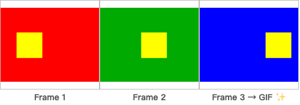

TinyPS › 指南
逐帧编辑 GIF，一个字节都不上传
动画 GIF 其实就是一叠帧。TinyPS 把 GIF 拆成一页一帧，让你逐帧修改，再写回真正的动画 GIF——全程在浏览器本地完成。
GIF 逐帧编辑器，就是能打开动画、逐帧处理、再导出成动画 GIF 的工具。TinyPS 把它做在浏览器扩展里：每一帧都是一页，可裁剪、旋转、加水印、压缩。最多 60 帧，不上传、免注册。

如何在 TinyPS 里逐帧编辑 GIF
- 安装 TinyPS 扩展，打开编辑器。
- 拖入动画 GIF。TinyPS 会解码并把每一帧放到独立页面，保留原来的帧延迟。
- 逐页编辑——裁剪、缩放、旋转、加文字或水印、套滤镜、去背景。
- 点「导出动画 GIF」。TinyPS 把每一页走完整编辑管线，在本地写回一个真正的动画 GIF。
和网页版 GIF 工具有什么不同
多数 GIF 逐帧工具是网站，你要上传文件、在网页里编辑、再下载。TinyPS 是浏览器扩展，GIF 编辑和你平时的修图工具在同一个多页工作区里。
| 能力 | TinyPS | 常见网页 GIF 工具 |
|---|---|---|
| 帧在哪里处理 | 本机处理，什么都不上传 | 上传到服务器 |
| 能否离线用 | 装好后可以 | 需要联网 |
| 逐帧编辑手段 | 裁剪、旋转、文字、水印、滤镜、去背景 | 通常只能删除/排序/改时长 |
| 最大帧数 | 每段动画 60 帧 | 不定 |
| 导出 | 动画 GIF，或逐帧 ZIP | 动画 GIF |
帧数上限：超过 60 帧的动画会截取前 60 帧并给出提示。所有帧编辑都在你本机的内存里完成。
常见的 GIF 逐帧处理
- 删掉开头拖沓或结尾混乱的帧，直接删除对应页面即可。
- 对每一帧统一裁剪或缩放，让整段动画适配新尺寸。
- 用 1° 微调把抖动的片段转正一点点。
- 给指定帧加文字字幕或水印图层。
- 导出前重新编码压缩，给体积过大的 GIF 瘦身。
为什么本地处理 GIF 更重要
GIF 里常有截图、私人瞬间或未发布的内容。用 TinyPS，帧永远不离开你的设备，也不用注册账号。处理用的是浏览器自带解码器和本地编码器，装好扩展后断网也能用。
常见问题
如何逐帧编辑 GIF？
用 TinyPS 打开 GIF，每一帧会变成多页工作区里的一页。改好要改的页，再选「导出动画 GIF」写回一整段动画。
GIF 编辑器会上传我的动画吗？
不会。解码、编辑、GIF 编码都在你设备的浏览器里完成，没有服务器往返，也不需要账号。
TinyPS 最多能处理多少帧？
每段动画最多 60 帧。更长的 GIF 会截取前 60 帧并明确提示，这样编辑器能保持流畅。
能删除或调整帧的顺序吗？
可以。因为每一帧就是一页，删除那一页即可去掉该帧，在缩略图条里拖动就能调整帧顺序。
能给 GIF 加文字或水印吗？
可以。文字和填充图层在每一帧上都和静态图片一样好用，导出前都保持可编辑。
导出后我的修改和帧时长会保留吗？
会。TinyPS 把每一页走完正常编辑管线，用真正的 LZW GIF 编码器写回，保留动画和帧延迟。
可以离线使用 GIF 编辑器吗？
可以。TinyPS 本地运行，扩展装好后无需联网也能编辑。
GIF 里有些帧我想微调角度，能做到吗？
可以。Pro 的旋转微调支持每次精确 1°，或输入 0 到 359° 的任意角度；选中图层时绕图层自身中心非破坏旋转，随时归零不留损。